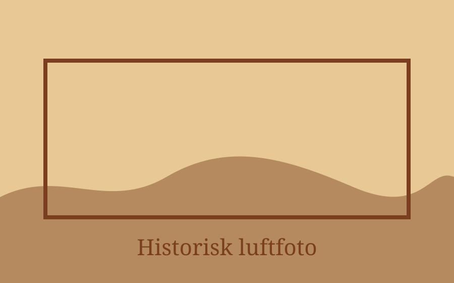

Danmark før Google
Find historiske luftfotos
v6 virker direkte på GitHub Pages uden backend. Appen finder koordinater og bygger et korrekt KB API-link, som åbnes direkte i browseren.
v6

Ingen skjult demo-fallback. Ingen falske resultater.
Søg efter luftfotos
Indtast sted eller adresse. Appen bygger det rigtige KB-link.
Klar. Denne version virker uden proxy.
Resultat
Ingen søgning endnu.